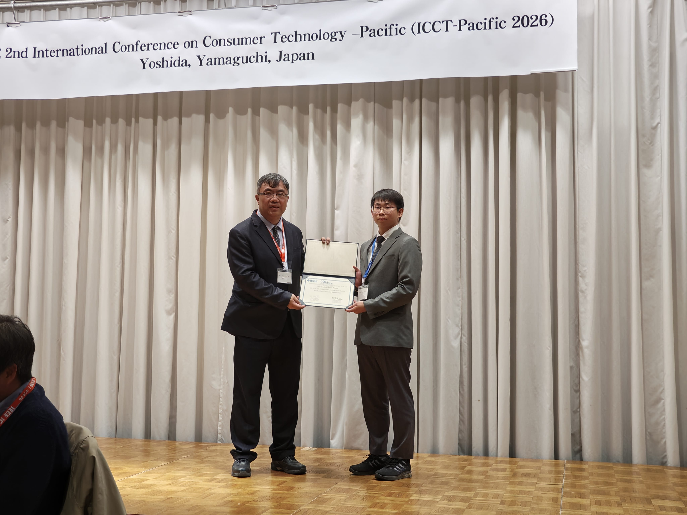
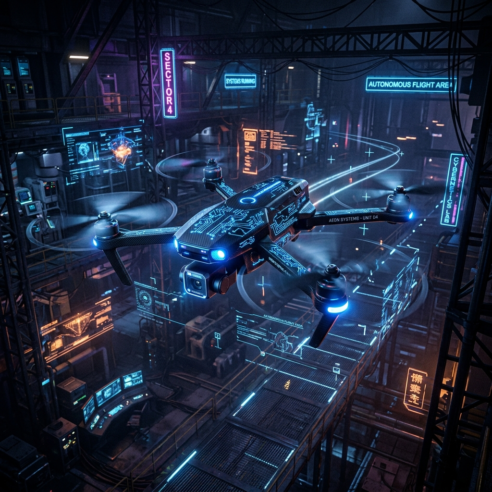
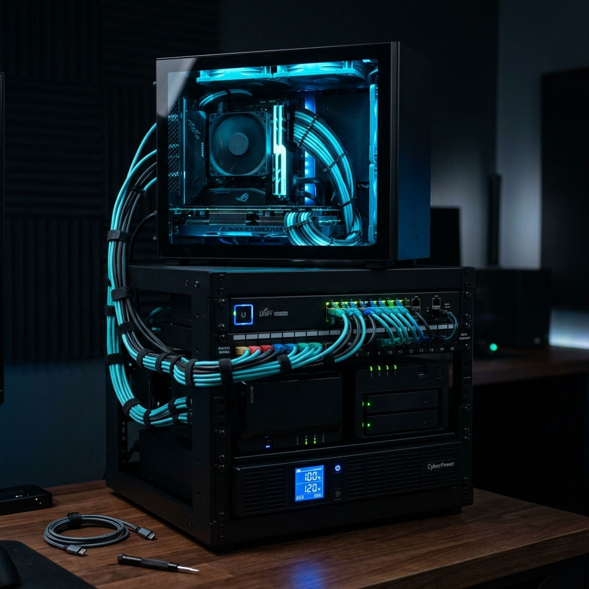
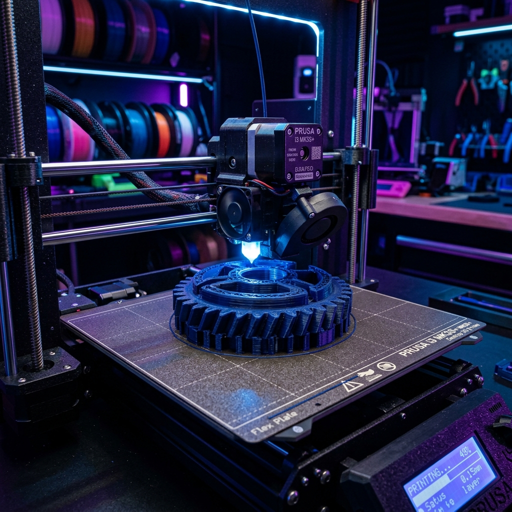
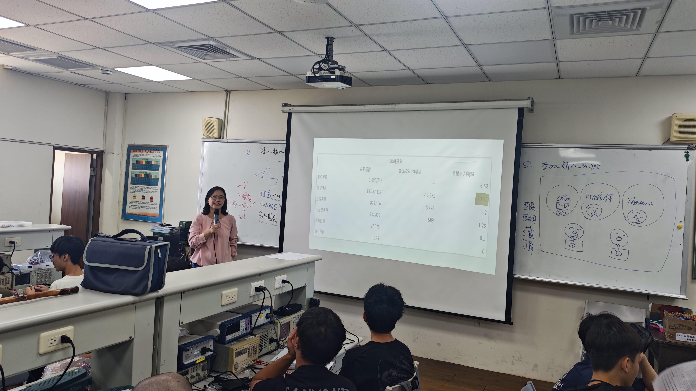
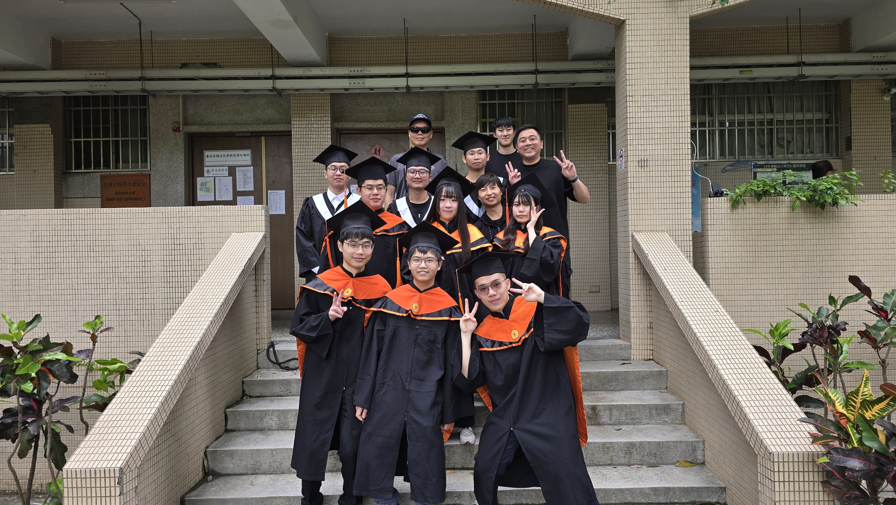
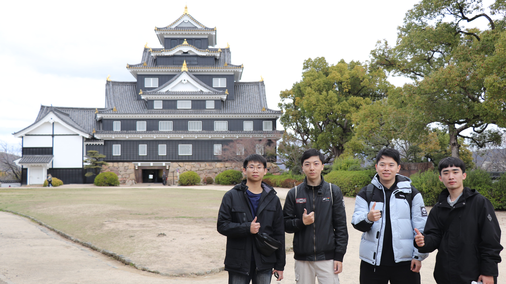
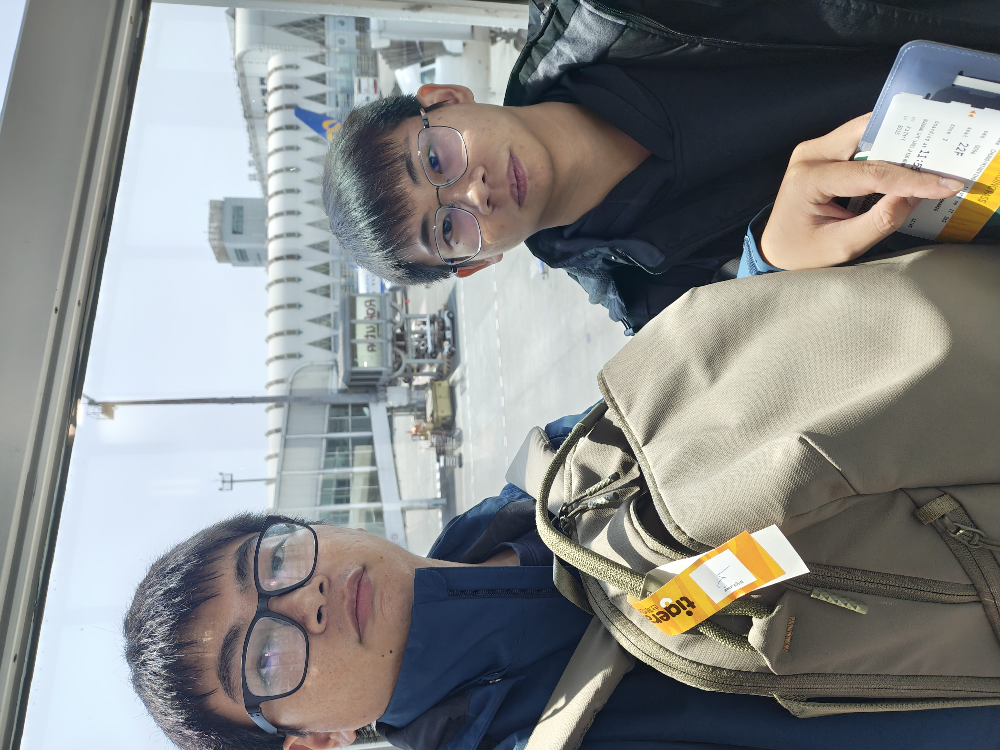

學術成果
ICCT-Pacific 國際學術會議
於 ICCT-Pacific 國際學術研討會上發表學術論文，並憑藉扎實的系統架構與精美的海報設計展示，獲頒「最佳學生海報獎 (Best Student Poster Award)」。
詳細論文資訊專注於 網路工程 與 AIoT 邊緣運算，熱衷於底層虛擬化、網路基礎設施建置，以及軟硬體整合的數位製造實作者。
底層探索與數位製造的實踐者

我目前是電子工程系的學生，專注於網路工程 (Network Engineering) 與 AIoT 邊緣運算。我喜歡拆解複雜的系統架構，探究硬體、韌體、網路到上層軟體的溝通機制。對我而言，將數位程式碼與實體硬體世界連結，是無與倫比的樂趣。
深造嵌入式系統與 AIoT 領域
主修電子工程，專注於邊緣運算、軟硬體整合、影像辨識及無人機控制系統開發。
於雲林縣政府服務，累積實務管理運作經驗。
電子工程科五專部學業，奠定扎實的電子電路與硬體分析基礎。
高職電子科啟蒙，學習微控制器開發與基礎電子理論。
「專業、穩健、極客精神」。面對複雜的基礎設施架構與除錯挑戰，我秉持系統化的思考方式，以穩健的方式部署環境，並以極客精神追求極限效能與自動化。
從實體網路硬體到邊緣運算虛擬化
部署多節點虛擬集群，實現 LXC 容器與 VM 的高可用性架構。
設計 Docker 檔案與 Compose 配置，構建輕量、易遷移的微服務環境。
編譯客製化韌體，規劃防火牆、VLAN、VPN 通道與智慧分流系統。
管理網路交換機與路由器，設置多子網隔離、動態路由及防禦策略。
利用 ROS 2 框架開發無人機導航、感測器數據分析與自主避障邏輯。
編寫微控制器 (ESP32, STM32) 與單板電腦 (樹莓派, Jetson Nano) 控制程式。
在邊緣運算裝置上部署量化輕量模型 (YOLOv8) 進行即時物件偵測與追蹤。
使用版本控制與自動化腳本 (Bash, Ansible) 管理大規模主機運作。
熟練改裝 Creality 等機型，自組 Klipper 韌體核心，優化列印品質。
使用 Fusion 360 進行機構設計，產出符合公差標準的工業級功能性零件。
使用示波器與萬用表進行電路分析，能動手進行貼片元件銲接與維修。
從實作中累積，以成果來證明

於 ICCT-Pacific 國際學術研討會上發表學術論文，並憑藉扎實的系統架構與精美的海報設計展示，獲頒「最佳學生海報獎 (Best Student Poster Award)」。
詳細論文資訊

從零建構個人機櫃，採用 Proxmox VE 進行多虛擬機器管理。上層透過 OpenWrt 作為軟路由核心提供 VLAN 隔離、負載均衡與 Docker 微服務部署。
機櫃拓撲與配置
將 Creality 3D 列印機升級為主動雙軸，重寫 Klipper 控制韌體，並用 Fusion 360 設計散熱風道與列印零件，顯著提升了列印精度與速度。
設計零件 STL


共同探索技術、分享旅程的戰友

交流想法，或是一起進行有趣的專案
歡迎透過以下管道與我取得聯繫，我會盡快回覆您！